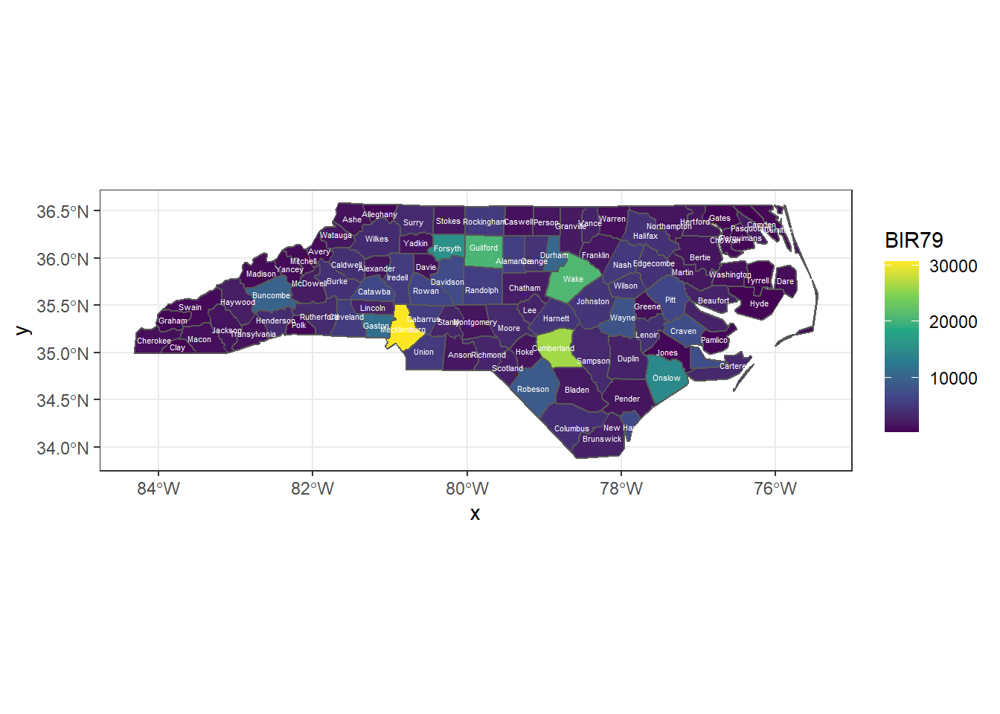
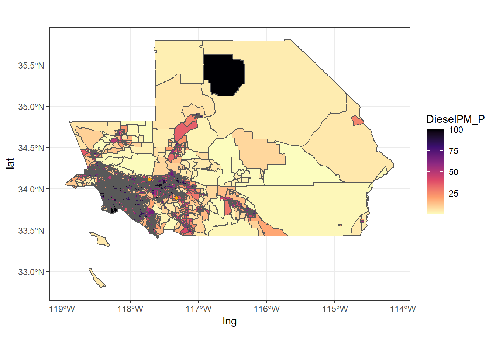

Today we will be focusing on the practice of geospatial data visualization.
Once again, my preferred framework for the workflow of data visualization is shown in Figure 15.1
Figure 5.1: Tidyverse data visualization framework
5.1 Load and Install Packages
Load the tidyverse and sf. Today we will be making static maps in ggplot which is part of the tidyverse ecosystem. We need the sf package to load, transform, and display geospatial data.
5.3 Visualize the Data - Geospatial ggplot Edition
While the tidyverse doesn’t have all the features of leaflet, it can be a quick way to visualize geospatial data for static maps and there are times when adding a static ggplot map is sufficient and actually preferred to the more detailed leaflet maps.
Figure 5.2: ggplot map for North Carolina counties
Note that ggplot uses + rather than the magrittr %>% for connecting lines of code.
In contrast to the leaflet map, the ggplot defaults to showing the x- and y-axis coordinates (latitude and longitude), shows guidelines, and only draws the counties in the dataset, rather than defaulting to showing an interactive map.
Figure 5.3 shows the same style of map replacing nc with SoCalEJ.
Figure 5.3: ggplot map for census tracts in Inland SoCal counties
5.3.3 Improve the Visualization
We have many options to improve a ggplot visualization. Let’s start by cleaning up the background using theme_bw(). theme_bw() changes the background from gray to a cleaner black-white style as shown in Figure 5.4.
Figure 5.5: ggplot map for North Carolina counties using theme_bw()
Let’s add colors in a ggplot way.
Use aes(fill = <VARIABLE NAME>) to assign a category to color the counties by. The color palette to fill with is selected in scale_fill_<TYPE> where TYPE can be any of the following categories
binned
brewer
continuous
date or datetime
discrete
fermenter
viridis
First let’s use the default palette for BIR79 to show the county birthrates in 1979. Adding fill = BIR79 to the aes() defaults to the Blues palette. Figure 5.6 shows the result of adding a fill color scale.
Figure 5.6: ggplot map for North Carolina counties using theme_bw() with fill
Let’s change that to a viridis color scale. The function scale_fill_viridis_c() adds a fancier color-blind viridis palette in a continuous scale. Figure 5.7 shows this color scale option.
Figure 5.7: ggplot map for North Carolina counties using theme_bw() with viridis
We can also add other geoms, like points or labels to this map. Let’s try to label the counties.
The nc dataset has a variable called NAME for the county names. Figure 5.8 shows the figure when we add the county names using the function geom_sf_text().
Warning in st_point_on_surface.sfc(sf::st_zm(x)): st_point_on_surface may not
give correct results for longitude/latitude data

Figure 5.8: ggplot map for North Carolina counties with names overlaid
There is a lot going on in that function. I made the text white color = ‘white’, the size of the font 1.5 size = 1.5, and added the label aesthetic with aes(label = NAME). If you remove the size or the color, you can see why those alterations were made.
5.3.3.1 Exercise - Improve the SoCalEJ Visualization
Show a variable (categorical, continuous, or quantile) using a fill option.
Add two or more SoCal locations to the map using geom_point and your locations table. If that is easy, try increasing the salience of the points through size, color, or shape modifications to that layer.
Figure 5.9 shows a potential example of what that might look like.

Figure 5.9: ggplot map for SoCal Diesel PM Percentile
It is really hard to see the details here. Let’s learn one last trick to zoom in on a ggplot to adjust the axes. The scale_x_continuous() and scale_y_continuous() functions allow us to set different axis limits. Figure 5.10 shows the